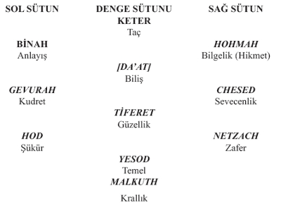

32 harika yol, ilk dört sefirotun enerji transferinin işaretini anlatır. Bu enerji, Ayn-Sof ve Adam Kadmon’dan aşağı doğru, biçimlenmenin ilk mekânı olan ilk 4 adımdır ki, evrim sürecinin tamamını kapsar. Bu yüzden, 32 harf ilk dört sefirahın projeksiyonudur diyebiliriz. Kısaca, ilk dört sefirah, İnsan Bilinçlenmesine ait iç mekânın doğuşunu anlatır”
Sepher (metin), sepharim (kitaplar), sippur (iletişim), sappir (safir, parlaklık, ışıklı), separ (sınır) ve safra (kâtip,yazıcı) sözcüğü gibi çok genişletilmiş anlamlar içerdiği de Scholem tarafından ileri sürülmüştür. Sefer Ha Bahir (12.yy.sonları)’den önce Sefirot, sayılar kadar önemsenmiyordu fakat Gnostik veya Neoplatonik terminolojide çok eski zamanlardan beri yaratılışın araçları olarak kullanıldıkları anlaşılmaktadır. Sefer ha-Bahirde Sefirot, ma’amaroth (on sözcük veya yaratılışı oluşturan on kelam) ve middot (Tanrı’nın özellikleri veya sıfatları) ile tanımlanır.

Tablo 15: Üç sütun üzerinde Sefirot
Sefirot’un, üç sütun halinde görünüşünde, Merhamet sütunu (Chesed) sağda, Yargı veya Şiddet (Gevurah) solda ve Denge veya Şefkat veya Güzellik (Tiferet) orta sütundadır, aşağı dünyaların Kutsal denetlemesini bu üç sütun birlikte oluştururlar. Bu yüzden Bahirde, sefirot ile bilinen Talmudik düşünceler arasında bağlantı kurulmaktadır. Örneğin; Talmudda okuduğumuza göre, dünya on özellik boyunca yaratılmıştır: “bilgelik ve anlayış, akıl ve şiddet (Gevurah), azarlama ve kudret, doğruluk ve adalet, merhamet ve şefkat”. Bunlar ile sefirot arasındaki ilişkilerin diğer talmudik, aggadik ve Kitab-ı Mukaddes pasajları’nda da bulunduğu ileri sürülmüştür [I. Tarihler/Chronicle 29:11].
Sefirot dizilişinde, sağ sütûnu merhamet kuralları ile Chokmah (Hikmet) Sefirahı yönetir, bu sütun genişleyen veya aktif taraftır. (Tanrının sonsuz lütfuna “sonsuza kadar dayanmayı” düşündürür)
Sefirotun karşı tarafı Adalet’tir ve bu sütunu, Binah (Anlayış) Sefirahı yönetir. Sıkan, sınırlayan veya pasif taraf sayılır. (Cezalandıran Katı Adaleti düşündürür)
Son olarak orta sütun, Keter (Taç) Sefirahı tarafından, Tanrının İsteği (veya zerafeti) ile işbirliği yaparak yönetilir. Bu sütûn eşitlik veya kusursuz uyumdur. Görüldüğü gibi orta sütunda Keter’den Malkhuta, iyilikten kötülüğe doğru boyutsal bir akış vardır. Orta sütun aynı zamanda “Bilme Ağacı” ile ilişkilidir. Genesis 2:9’da sözü edilen, “İyilik ve kötülüğü bilme ağacı”
Bu üç sütun örneği Zohar’dan alınmıştır, İsrailoğullarının Kabîle reislerinin konuşmalarında Tanrının birçok özelliğinden bahsedilir, örneğin; Yakup ile (orta sütûn) uyum, İsak’ın adalet yanı ve Abraham’ın sevecen yanı gibi. (Örn. İçin Bkz. Zohar bölümü: Sh. 97 “Jakob (Yakub) ortaya çıkana ve herşey uyum içinde olana kadar”)
Bu konuda daha önce de gördüğümüz gibi, Yaşam Ağacı’nın “orta sütûn”u, Yakup, Mesih ve Metatron figürü ile yakın ilişkilidir. Bu orta sütûn (denge sütûnu), eril ve dişil yanlar arasındaki “dengeyi” de düşündürür.
Bu on Sefirot kapsama alanı olarak da iki gruba bölünür. İlk üçü “yukarı” sefirot olarak bilinir ve “daha yüksek cennetsel alanlar” ile ilgilidir.
1. Keter Elyon (En üst Taç) veya Ratzon (İrade)
2. Hohmah (Hikmet-Bilgelik)
3. Binah (Akıl) veya Gedulah (Büyüklük)
Kalan yedisi, “alt” sefirot olarak dikkate alınır, yaratılış ve dünya ile ilgilidir.
4. Chesed (Sevgi-aşk)
5. Gevurah (Güç) veya Din (Adalet)
6. Tiferet (Güzellik) veya Rachamim (şefkat-merhamet)
7. Netzach (Dayanma gücü-dayanıklılık-tahammül)
8. Hod (Görkem-haşmet)
9. Yesod Olam (Dünyanın temeli) veya Tzaddik (doğruluk-erdemli-âdil)
11. Malkhut (Krallık) veya Atarah (itibar-otorite-asalet) veya Shekhina (dişil tanrısallık
Sefirot, en çok Keter ile başlayıp Malkut ile biten, ortak merkezli daireler serisi olarak tarif edilmiştir. Bu düzen, Başlangıçtaki adam (Adam Kadmon)’un organları veya yaşam ağacı olarak da gösterilmiştir. Lurianik kabalada ise Keter’in yerine, Binah ve Chesed sefirahları arasına Da’at (Biliş) Sefirahı yerleştirilmiştir.
Yukarıda ayrıntılı olarak anlatıldığı gibi, Sefirot birçok özelliklerinin yanında bütün dünyaların alt yapısıdır ve insan mikrokosmosu ile yansımasıdır.
Şimdi Sefirot dizilişi ve ilişkileri ile ilgili genel bilgileri daha ayrıntılı olarak göreceğiz. Birçok metafora (Kozmik ağaç, renkler, sorular, giysiler, cinsellik v.s.) ilişkin ayrıntılı açıklamalar, herbir sefirahın çalışması, birbiriyle diyalektik ilişkisi, evren yorumları ve kabalistik terimler, daha sonraki bölümde, her bir sefirah için ayrı ayrı ele alınacaktır.
Sefirot, yukarıda değindiğimiz gibi, insanın hem bedensel hem de Tanrısal ruhunun altyapısıdır; Her iki ruh da İntelekt ve Duygunun kombinasyonudur. Nefesh HaBehamit (Bedensel ruh) duygulara hakim olacak güçte olup çoğunlukla günaha eğilim (Yetzer HaRah) olarak bilinir. İntelekt Nefesh Elokit’te (Tanrısal ruh) baskın olup iyilik eğilimi (Yetzer HaTov) olarak bilinir. Nefesh HaBehamit’in akıl yetisi Nefesh Elokit ile birlikte öncelikle duygulara hizmet için kullanılırken, duygular meditatif aklın bir ifadesidir. Nefesh Elokit’de duyguların canlandırılması, öncelikle duyguları etkileyen meditasyon gücü ile başarılır.
Sefirot’un “dört dünya” üzerindeki düzeni, şöyle olmaktadır.
Keter, Ain Sof’a yakındır ve bu yüzden bilinemez, aşağıda kalan diğer dokuz’undan farklı olarak değerlendirilir.
Chokmah’a en yüksek Sefirah olarak bakılabilir. O “Baba”nın ve Y-H-V-H’dan “Y’”nin zamanı (geçmiş) ile ilişkilidir
Binah, “Anne”dir, zamanın (gelecek) boyutu ve Y-H-V-H’den “H” ile ilişkilidir.
Sonraki 6 Sefirot birlikte bir gruptur ve zamanın sürekliliğinin 6 yönü ile ilişkilidir ve “İlişki” kavramını betimler. Bu altılıya toplu olarak “Zer Anpin” (küçük yüz) adı verilir ve sayısal değeri 6 olan “V” Vav ile birleştirilir. Tiferet bu grubun merkezinde ve Zer Anpin’in kendisi olarak betimlenir.
Sonuncu Malkhut Sefirahı, Tanrının yeryüzündeki varlığı (Shekinah) ile çok yakın ilişkilidir. O gelindir ve Y-H-V-H’in son veya küçük “H”sidir.